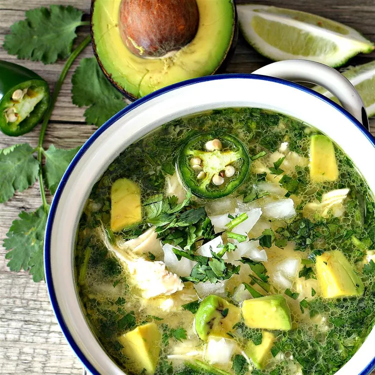

Spicy Avocado Soup!

The flavor of Mexico! Que picante!
Ingredients
- 2 skinless, boneless chicken breasts
- 1 tablespoon olive oil
- 1 large white onion, chopped, divided
- 3 limes, juiced
- 1 cup chopped cilantro, divided
- 2 jalapeno peppers, halved and thinly sliced
- 3 cloves garlic, minced
- 4 cups water
- 2 tablespoons reduced-sodium chicken bouillon powder
- 3 large firm-ripe avocados, cut into chunks
- 1/4 cup crumbled queso fresco, or to taste
Instructions
- Boil chicken for about 7 minutes
- Cool the chicken with cool water, then shred
- Heat olive oil, then add 1/2 onion, lime juice, 1/2 cup cilantro, jalapenos, and garlic.
Let the mixture cook for about 5 minutes.
- Combine 4 cups of watter with bullion powder and pour into pot.
Cook for about 5 minutes, then add chicken to pot.
- Top with remaining ingredients
- Enjoy!
Recipe Inspiration:
allrecipes